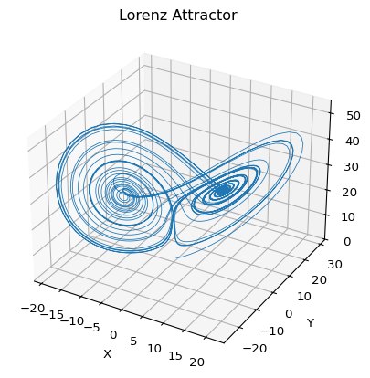

Lorenz Attractor
Vector Field, Fixed Points, and Euler Simulation
The Lorenz system is one of the standard examples where a smooth deterministic ODE produces irregular long-term behavior (Lorenz 1963; Strogatz 2024).
\[ \begin{aligned} \dot x &= s (y - x), \\ \dot y &= r x - y - x z, \\ \dot z &= x y - b z. \end{aligned} \tag{1}\]
For the classical Lorenz attractor, the standard parameter choice is
\[ s = 10, \qquad r = 28, \qquad b = \frac{8}{3}. \]
Implement the vector field
The right-hand side takes one point \((x,y,z)\) and returns the instantaneous velocity in phase space.
def lorenz(xyz, s=10.0, r=28.0, b=8.0 / 3.0):
x, y, z = xyz
x_dot = s * (y - x)
y_dot = r * x - y - x * z
z_dot = x * y - b * z
return np.array([x_dot, y_dot, z_dot])Fixed points
Setting the right-hand side equal to zero gives the equilibrium points.
For \(r > 1\), the Lorenz system has three fixed points:
\[ (0,0,0), \qquad \left(\sqrt{b(r-1)}, \sqrt{b(r-1)}, r-1\right), \qquad \left(-\sqrt{b(r-1)}, -\sqrt{b(r-1)}, r-1\right). \]
The classical chaotic regime appears when trajectories do not settle near a single fixed point, but instead keep circling around the two lobes of the attractor.
Simulate with Euler
Forward Euler updates the state by
\[ \mathbf{x}_{n+1} = \mathbf{x}_n + \Delta t\, f(\mathbf{x}_n). \]
In code, that becomes a simple loop over time steps.
def simulate_lorenz(initial_state=(0.0, 1.0, 1.05), dt=0.01, num_steps=10000):
xyzs = np.empty((num_steps + 1, 3))
xyzs[0] = initial_state
for i in range(num_steps):
xyzs[i + 1] = xyzs[i] + lorenz(xyzs[i]) * dt
return xyzsWhat to look for
- The trajectory stays in a bounded region of phase space.
- It alternates between two lobes instead of converging to one point.
- The geometry looks structured, but the switching times are hard to predict over long intervals.
Try changing \(r\) or the initial condition and observe how the trajectory changes.
Reference code: amlab/extra/lorenz_attractor.py.
What’s Next?
One trajectory shows the geometry of the attractor. The next page compares two nearby trajectories so you can see sensitivity to initial conditions directly.
References
Lorenz, Edward N. 1963. “Deterministic Nonperiodic Flow.” Journal of the Atmospheric Sciences 20 (2): 130–41. https://doi.org/10.1175/1520-0469(1963)020<0130:DNF>2.0.CO;2.
Strogatz, Steven H. 2024. Nonlinear Dynamics and Chaos: With Applications to Physics, Biology, Chemistry, and Engineering. Chapman; Hall/CRC.